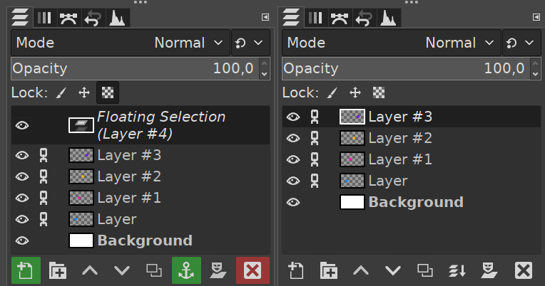
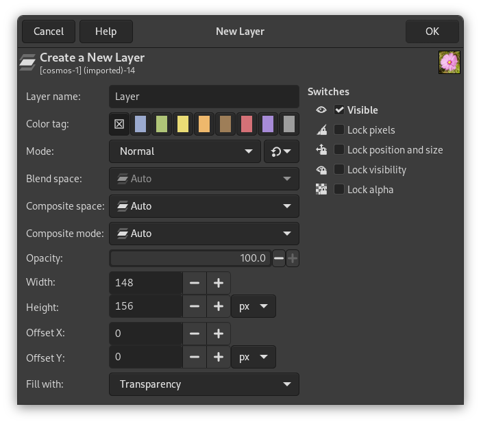

🟦
Пиксели
Хранят цветовые данные изображения. Из множества пикселей складывается фотография или рисунок.
Почему в графическом редакторе фон, надписи и объекты удобно размещать по отдельности? Как изменить порядок элементов, переместить рисунок и удалить ненужный слой?
На уроке разберём устройство многослойного изображения и научимся различать основные действия со слоями GIMP.
Растровое изображение состоит из пикселей — маленьких элементов изображения. GIMP позволяет открывать рисунки и фотографии, редактировать их, добавлять надписи, изменять цвета и создавать композиции из нескольких объектов.
Хранят цветовые данные изображения. Из множества пикселей складывается фотография или рисунок.
Помогают рисовать, выделять, перемещать и преобразовывать части изображения.
Рабочее изображение может включать множество слоёв, каждый из которых редактируется отдельно.
Ты создаёшь плакат о природе: фотография служит фоном, поверх неё расположен рисунок дерева, а вверху — заголовок. Если всё объединено в один слой, менять отдельные элементы неудобно. Слои решают эту проблему.
Слой — отдельный элемент изображения, который может содержать пиксели, текст или другие данные. Слои можно представить как прозрачные листы, наложенные один на другой. GIMP показывает их совместный результат.
Все элементы выглядят как одна картинка, но в проекте GIMP могут храниться отдельно.
Можно переместить надпись, не затрагивая дерево и фон; скрыть солнце, не стирая его; изменить прозрачность одного объекта или удалить ненужный элемент.
Базовая фотография или заливка. Часто находится внизу списка.
Рисунок или объект с прозрачными участками вокруг него.
Надпись, созданная инструментом «Текст». Её можно перемещать отдельно.
Объединяет несколько слоёв для удобной организации проекта.
Обычный слой не обязан занимать весь холст: его ширина, высота и расположение могут отличаться от размеров всего изображения. Для прозрачных областей используется альфа-канал.
Чтобы управлять слоями, открой диалог «Слои»: Окна → Стыкуемые диалоги → Слои . В нём отображаются миниатюры, названия, видимость и порядок всех слоёв. Обычно верхняя строка списка соответствует верхнему слою изображения.

Учебная схема специально упрощена; обозначения команд могут отличаться по версии GIMP.
Прежде чем рисовать, перемещать или удалять объект, проверь, какая строка выделена. Если выбрать другой слой, команда может изменить не тот элемент изображения.
Атрибуты слоя — характеристики, определяющие его имя, отображение, положение и способ взаимодействия с другими слоями.
Помогает различать слои. «Дерево» понятнее, чем «Слой #7».
Глаз включает и выключает показ слоя, не удаляя его.
Регулируется от 0 до 100 %. При уменьшении нижние слои видны сильнее.
Определяет, как цвета слоя взаимодействуют с изображением под ним. Базовый режим — «Нормальный».
Ширина, высота и смещение по горизонтали X и вертикали Y.
Защищает от случайного рисования, перемещения или изменения прозрачности — в зависимости от вида блокировки.
В контекстном меню также доступна команда «Изменить атрибуты слоя…» .

Альфа-канал позволяет задавать прозрачность пикселей. В GIMP полностью прозрачные участки слоя обычно показаны серо-белой «шахматной» сеткой, если под ними нет видимого изображения.
Непрозрачный объект
Объект частично прозрачен
Объект невидим
Если установить непрозрачность 0 %, слой перестанет быть виден, но останется включённым в списке. Значок глаза управляет видимостью независимо. В обоих случаях сам слой остаётся в проекте.
🔐 Пиксели: чтобы случайно не закрасить рисунок кистью.
📍 Положение и размер: чтобы объект не сместился.
▫️ Альфа-канал: чтобы защитить текущую прозрачность слоя.
Слои располагаются в стопке. Непрозрачная часть верхнего слоя закрывает нижний. Когда мы меняем порядок строк в панели «Слои», объекты могут выглядеть по-другому, даже если по холсту они не двигались.
В диалоге «Слои» выбери нужный слой и используй команды «Поднять слой» или «Опустить слой». Также в GIMP можно перетащить строку слоя в другое место списка. Изменится порядок наложения, а не положение объекта на холсте.
Инструмент «Перемещение» изменяет расположение содержимого слоя на холсте. Он вызывается клавишей M либо выбирается на панели инструментов. Чтобы двигать именно нужный объект, важно проверить настройки инструмента.
Проверь, какой слой выбран. У инструмента есть режим, при котором GIMP пытается выбрать слой под указателем. Если надо переместить именно активный слой, используй соответствующий режим. Убедись, что перемещение не заблокировано.
Помни: изменение положения на холсте не меняет автоматически порядок слоёв.
Меняет координаты объекта: дерево было слева, стало справа. Обычно используют инструмент «Перемещение».
Условные координаты в пикселях для учебного примера.
Меняет порядок наложения: объект может оказаться впереди или позади другого, но его координаты остаются теми же.
Если надпись оказалась за изображением дерева, нужно ли её двигать по холсту? Не обязательно: иногда достаточно поднять текстовый слой выше слоя дерева.
При редактировании важно различать скрытие слоя, удаление слоя и очистку его содержимого. Результат может выглядеть одинаково, но состояние проекта будет различаться.
Если нужно лишь временно убрать объект с экрана, лучше скрыть слой. Если удалили по ошибке, сразу попробуй команду Ctrl + Z — отмену действия, пока она доступна. Очистка содержимого слоя отличается от удаления: пустой слой может остаться в проекте.
В GIMP команды «Сохранить» и «Экспортировать» решают разные задачи. Собственный формат XCF сохраняет многослойную структуру. Экспорт в PNG или JPEG создаёт изображение для просмотра и обмена, но не сохраняет редактируемую стопку слоёв GIMP.
Слои, имена, их порядок и параметры остаются доступны для следующего редактирования в GIMP.
Можно разместить на сайте или отправить другому человеку. Исходный многослойный проект лучше оставить отдельно.
Сначала сохрани рабочий файл через Файл → Сохранить (Ctrl + S), затем при необходимости используй Файл → Экспортировать как… . Не заменяй исходный XCF единственной картинкой PNG или JPEG.
Отдельно размещают фон, фотографии, логотипы и заголовки. Любой элемент можно исправить позже.
Несколько фотографий совмещают в одном изображении, меняют их прозрачность и расположение.
Фон, персонажи и детали рисунка могут находиться на разных слоях, что облегчает исправления.
Представь, что на плакате фон закрывает заголовок. Какая операция поможет? Если заголовок виден, но расположен слишком низко, нужна уже другая операция. Ответы объясняются в разделах 7–9.
Ответь своими словами, опираясь на схемы и примеры. Особое внимание удели действиям, которые внешне похожи, но по-разному изменяют проект.
Что называют слоем в графическом редакторе GIMP?
Какие преимущества даёт использование нескольких слоёв при создании изображения?
Для чего предназначен диалог «Слои»?
Что такое активный слой и почему важно правильно его выбирать?
Какие основные атрибуты имеет слой?
Как изменяются видимость и непрозрачность слоя?
Что такое альфа-канал и для чего он используется?
Как влияет порядок расположения слоёв на итоговое изображение?
Как переместить слой по холсту с помощью инструмента «Перемещение»?
Чем перемещение слоя по холсту отличается от изменения его положения в списке слоёв?
Чем скрытие слоя отличается от его удаления?
Почему многослойный проект рекомендуется сохранять в формате XCF?
Сегодня мы выяснили, как GIMP собирает изображение из нескольких слоёв, какие свойства можно менять и почему скрытие, удаление, перемещение по холсту и изменение порядка — разные операции.
Каждый объект можно хранить отдельно и выбирать нужный активный слой.
Видимость, непрозрачность, блокировки, положение и порядок влияют на результат.
XCF сохраняет рабочие слои для дальнейшего редактирования.
Слои позволяют изменять отдельные части изображения, не переделывая всю композицию. Чтобы работать уверенно, нужно понимать, какой слой выбран, где он находится на холсте и на каком месте стоит в общей стопке.